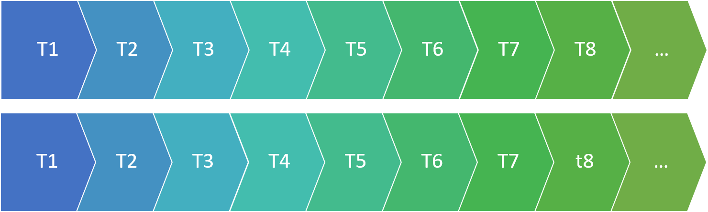
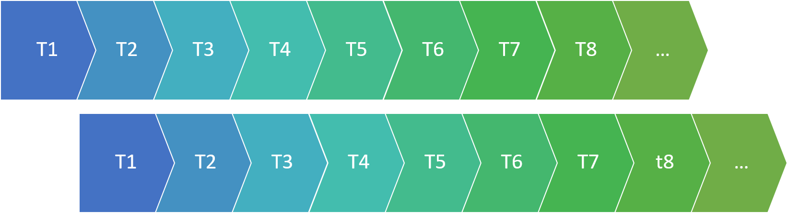
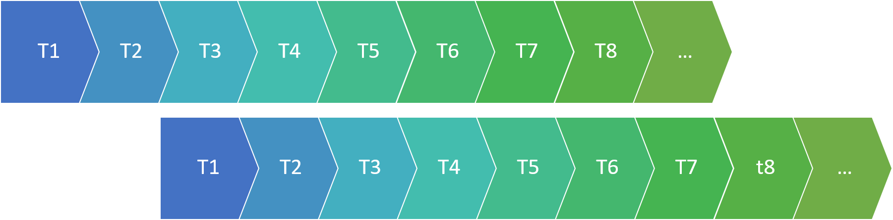

22 Assessment for Linear Models
22.1 Section Learning Outcomes
Knowing how to plan and fit a model isn’t the end of the process (at all). What’s next? This time, we explore how to assess whether a model really is appropriate for a particular dataset, and thus reliable. This section focuses very specifically on that important task.
(After this, with the question of model assessment settled favorably, we can finally turn to model interpretation - what do the results mean, and how can we communicate the insights the model provides via words and visualizations?)
By the end of this section you will:
- List conditions under which linear regression is appropriate, and check whether they hold for a specific dataset and model
22.2 Text Reference
Recommended reading for the materials covered in this tutorial can be found in:
- Beyond Multiple Linear Regression Chapter 1.3
- Regression Modeling Strategies Chapter 2.7
- Course Notes Chapter 2
22.3 Linear Regression Conditions
Before making any statistical inferences with our regression model, we should verify that all necessary conditions for its use are met. Otherwise, we risk presenting and interpreting inaccurate estimates and un-trustworthy conclusions!
In this case, there are 5 conditions:
- Representative sample: the sample data must be representative of the population of interest (as for any statistical inference).
4 more conditions are more specific to linear regression:
- Linearity of the predictor-response relationship: there is not a clear non-linear trend in a scatter plot of the response vs. the predictor.
- Independence of residuals: Knowing the value of one residual doesn’t help you predict the others; there are no lurking variables that affect the accuracy of the model predictions.
- Normality of residuals: The residuals should follow a normal distribution with mean 0.
- Error variance is constant: The variance (spread) of the residuals does not change with predictor variable value, or with fitted (on-the-line) value. Other words for this are constant variance of residuals, or homoscedasticity.
22.4 Example Model
Let’s review and practice in the context of a specific example with a particular dataset and model.
To begin, we need to fit a linear regression model in R, using the function lm(). We’ll use the lead dataset from https://sldr.netlify.app/data/FlintWaterTestJanMar2016.csv.
This dataset contains water quality test results from a sample of households in Flint, Michigan. Water samples were collected between Jan. 30, 2016 - May 6, 2016. More details about the data collection can be found on the US EPA website.
Here are the first few rows of the dataset:
The first input to lm is a formula of the form \(y \sim x_1 + x_2 + ...\), where y is the name of the response variable, and \(x_1\), \(x_2\), … \(x_n\) are the predictor or explanatory variables. The second input to lm is data, the name of your dataset.
As an example, we’ll fit a model with response variable Lead and predictors Fluoride, Water_Filter, and Month. Correct the code below accordingly:
lead_model <- lm(Lead ~ Fluoride + Water_Filter + Month, data = lead)The R code above fits a linear regression model of the form:
\[ y = \beta_0 + \beta_1*x_1 + \beta_2*x_2 + \epsilon,\] where \(\epsilon \sim N(0, \sigma)\). (The residuals \(\epsilon\) follow a normal distribution with mean 0 and some standard deviation \(\sigma\).)
22.5 Model Summary and Coefficients
To extract just the coefficient or parameter values (the “\(\beta\)s”) from the fitted model object lead_model, we can use coef():
To get a full summary, use summary():
Notes (Reminders!) about the summary:
- The fitted model parameters are in the “Estimate” column of the coefficient table.
- The last column of the coefficient table contains p-values. The first row is the p-value for a test of the null hypothesis that the true intercept, \(\beta_0\), is 0 (this is not usually of much interest). The second row is the p-value for a test of the hypothesis that \(\beta_1\), the slope for the first predictor variable, is 0. This is usually of interest, because it tells us whether there is a “real” linear relationship between the two variables.
- \(\hat{\sigma}\) (an estimate of the standard deviation of the residuals from the data) is near the bottom of the output, called “Residual standard error.”
22.6 Regression conditions (again)
For a linear regression model to be appropriate for a dataset, the conditions that must be met are:
- The data are a representative sample of the population of interest.
- Linear relationship between each predictor and the response variable (or at least no apparent non-linear relationship).
- Independence of residuals
- Normality of residuals
- Error (residuals) variance is constant
But what do each of those (pretty technical) statements mean, and how can we check them?
22.7 Checking linearity
To verify that the relationship between our predictor variable(s) and our response variable is linear, we can examine a few plots.
DATA SCATTER PLOT(S)
First, we can make scatter plots of the data - specifically, the response variable as a function of each predictor variable. We want to verify that there are no apparent non-linear trends in the plot.
RESIDUALS VS. FITTED PLOT
Next, we can plot the residuals from the fitted model as functions of:
- The fitted values (predicted values \(\hat{y}\) for each data point in the dataset)
- (Optionally) Each predictor
In these plots, we should see no trends – linear or nonlinear. They should look like relatively random scatter.
We can use the R function resid() to get the residuals from the fitted model object, and fitted() to get the predictions.
22.8 Checking Independence
Independence of residuals means that knowing the value of one residual does not help you to predict the value of the next residual.
When data are collected over time and space, sometimes the residuals are not independent over time (or space) – for example, maybe series of positive residuals tend to occur together, or series of negative residuals together. How can we detect this kind of non-independence?
First, make sure that your dataset is sorted in order of time (if you are worried about non-independence over time) or space (if you are worried about possible non-independence over space). (The lead dataset is already sorted in temporal order - you can verify this by looking at the variable Decimal_Date.)
The autocorrelation function will help us.
This function computes a value akin to a correlation coefficient for the dataset, indicating how much it is correlated with itself at different “lags”. What does this mean?
Lag 0 is the correlation of the data with itself.

Of course the correlation at lag 0 is ALWAYS 1: the dataset is identical with itself.
What about larger lags?
To compute the ACF at lag 1, we slide one copy of the dataset forward one observation, and compute the correlation again:

This tells us how well we can predict one observation in the data, based on the preceding observation.
Lag 2 scoots the data one more position:

…And so on.
Outside this website, you can plot the ACF for many lags using the function s245::gf_acf(~fitted_model). (Here we have used acf(), but it will make a non-ggplot/non-ggformula type plot that is a little less pretty.)
The horizontal dotted lines are approximate 95% confidence boundaries for how large the ACF values (for lags greater than 0) should be, if the data are really independent.
In general, to verify the independence condition of linear regression, we want to confirm that not many of the ACF values for lags greater than 0 exceed those horizontal “fences” by very much. (One or two ACF values that just barely “poke above the fence” is not a major violation, especially as it is known that the method used to determine the “fences” is known to be a bit too conservative – even independent data will have ACF values that pass them more than 5% of the time.)
In the plot above, all the “spikes” are within the “fences”, so there is no indication of non-independence in the residuals (given the current sort order of the data).
22.9 Checking Normality of Residuals
To check whether the residuals look like a sample from a normal distribution, look at a histogram:
Note: The distribution doesn’t have to look perfectly normal – it has to look like it might reasonably be a sample from a normal distribution. A consequence of that is that as sample size gets smaller, even less-normal-looking residual distributions are quite commonly observed, and we can be even more generous in judging this condition.
Whatever the sample size, look for very notable skew and/or outliers in the residual distribution. If the residual distribution is unimodal and reasonably symmetric, it is probably okay.
22.10 Checking Error Variance
For linear regression to be appropriate for data, there should be homoscedasticity, or constant variance of the residuals. This means that the spread of the data points around the best-fit line should be constant - the width of the point cloud around the line should not be less in some places, and more in others.
Or, alternatively (and easier to see visually), the spread of the residuals around a horizontal line at y = 0 on a residuals vs fitted plot should be constant.
If this condition does not hold, the most common pattern to see is a “trumpet” shape like the one above, where the residuals become more spread out for larger fitted values. However, any non-constant spread is a cause for concern.
Variable by Variable
It is also a good idea to plot residuals as a function of each predictor. Constant variance should hold here just as it does when plotting as a function of fitted value.
22.11 Model Assessment: Checking Conditions
To review and practice, consider these more detailed explanations of each condition, accompanied by details about which plots to use to check each one and how to interpret them:
(You can also watch directly on YouTube if you prefer.)